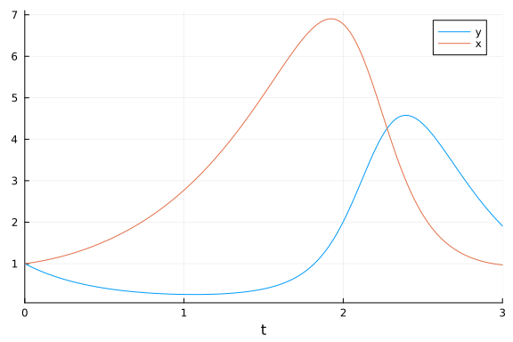
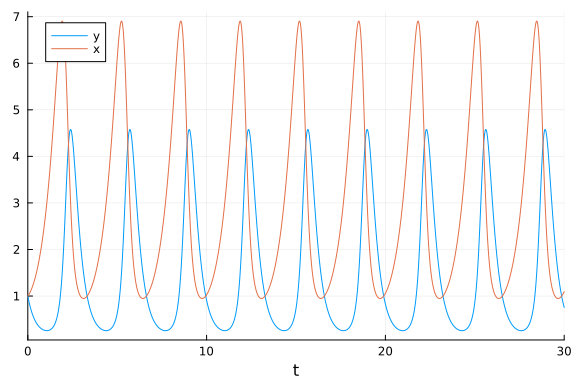

Lotka-Volterra Parameter Estimation Benchmarks
Parameter estimation of Lotka Volterra model using optimisation methods
using ParameterizedFunctions, OrdinaryDiffEq, DiffEqParamEstim, Optimization, ForwardDiff
using OptimizationBBO, OptimizationNLopt, Plots, RecursiveArrayTools, BenchmarkTools
using ModelingToolkit
using ModelingToolkitBase
using SciCompDSL
using ModelingToolkit: @mtkbuild, D_nounits as D, t_nounits as t
gr(fmt = :png)Plots.GRBackend()loc_bounds = Tuple{Float64, Float64}[(0, 5), (0, 5), (
0, 5), (0, 5)]
glo_bounds = Tuple{Float64, Float64}[(0, 10), (0, 10), (
0, 10), (0, 10)]
loc_init = [1, 0.5, 3.5, 1.5]
glo_init = [5.0, 5.0, 5.0, 5.0]4-element Vector{Float64}:
5.0
5.0
5.0
5.0@mtkmodel LotkaVolterraTest begin
@parameters begin
a = 1.5 # Growth rate of prey
b = 1.0 # Predation rate
c = 3.0 # Death rate of predators
d = 1.0 # Reproduction rate of predators
end
@variables begin
x(t) = 1.0 # Population of prey with initial condition
y(t) = 1.0 # Population of predators with initial condition
end
@equations begin
D(x) ~ a * x - b * x * y
D(y) ~ -c * y + d * x * y
end
end
@mtkbuild f = LotkaVolterraTest()Model f:
Equations (2):
2 standard: see equations(f)
Unknowns (2): see unknowns(f)
y(t)
x(t)
Parameters (4): see parameters(f)
a
b
c
du0 = [1.0, 1.0] #initial values
tspan = (0.0, 10.0)
p = [1.5, 1.0, 3.0, 1.0] #parameters used, these need to be estimated from the data
tspan = (0.0, 30.0) # sample of 3000 observations over the (0,30) timespan
prob = ODEProblem(f, u0, tspan, p)
tspan2 = (0.0, 3.0) # sample of 3000 observations over the (0,30) timespan
prob_short = ODEProblem(f, u0, tspan2, p)ODEProblem with uType Vector{Float64} and tType Float64. In-place: true
Initialization status: FULLY_DETERMINED
Non-trivial mass matrix: false
timespan: (0.0, 3.0)
u0: 2-element Vector{Float64}:
1.0
1.0dt = 30.0/3000
tf = 30.0
tinterval = 0:dt:tf
time_points = collect(tinterval)3001-element Vector{Float64}:
0.0
0.01
0.02
0.03
0.04
0.05
0.06
0.07
0.08
0.09
⋮
29.92
29.93
29.94
29.95
29.96
29.97
29.98
29.99
30.0h = 0.01
M = 300
tstart = 0.0
tstop = tstart + M * h
tinterval_short = 0:h:tstop
t_short = collect(tinterval_short)301-element Vector{Float64}:
0.0
0.01
0.02
0.03
0.04
0.05
0.06
0.07
0.08
0.09
⋮
2.92
2.93
2.94
2.95
2.96
2.97
2.98
2.99
3.0#Generate Data
data_sol_short = solve(prob_short, Tsit5(), saveat = t_short, reltol = 1e-9, abstol = 1e-9)
data_short = convert(Array, data_sol_short)
data_sol = solve(prob, Tsit5(), saveat = time_points, reltol = 1e-9, abstol = 1e-9)
data = convert(Array, data_sol)2×3001 Matrix{Float64}:
1.0 0.980224 0.960888 0.941986 0.923508 … 0.785597 0.770673 0.7560
92
1.0 1.00511 1.01045 1.01601 1.02179 1.07814 1.08595 1.0939
8Plot of the solution
Short Solution
p1 = plot(data_sol_short)
Longer Solution
p2 = plot(data_sol)
Local Solution from the short data set
obj_short = build_loss_objective(prob_short, Tsit5(), L2Loss(t_short, data_short), tstops = t_short)
optprob = OptimizationProblem(obj_short, loc_init, lb = first.(loc_bounds), ub = last.(loc_bounds))
@btime res1 = solve(optprob, BBO_adaptive_de_rand_1_bin(); maxiters = 7e3)
# Lower tolerance could lead to smaller fitness (more accuracy)2.881 s (20970947 allocations: 792.10 MiB)
retcode: MaxIters
u: 4-element Vector{Float64}:
1.500372966437285
0.9995169076129775
2.996045968774659
0.9987631601718622obj_short = build_loss_objective(
prob_short, Tsit5(), L2Loss(t_short, data_short), tstops = t_short, reltol = 1e-9)
optprob = OptimizationProblem(obj_short, loc_init, lb = first.(loc_bounds), ub = last.(loc_bounds))
@btime res1 = solve(optprob, BBO_adaptive_de_rand_1_bin(); maxiters = 7e3)
# Change in tolerance makes it worse2.879 s (21026114 allocations: 793.81 MiB)
retcode: MaxIters
u: 4-element Vector{Float64}:
1.5006831204276552
1.000934796409989
2.99858130252164
0.9991802622061451obj_short = build_loss_objective(prob_short, Vern9(), L2Loss(t_short, data_short),
tstops = t_short, reltol = 1e-9, abstol = 1e-9)
optprob = OptimizationProblem(obj_short, loc_init, lb = first.(loc_bounds), ub = last.(loc_bounds))
@btime res1 = solve(optprob, BBO_adaptive_de_rand_1_bin(); maxiters = 7e3)
# using the more accurate Vern9() reduces the fitness marginally and leads to some increase in time taken4.663 s (42370888 allocations: 1.10 GiB)
retcode: MaxIters
u: 4-element Vector{Float64}:
1.500407851541787
0.999569551330911
2.996805682143512
0.9991587393436832Using NLopt
Global Optimisation first
obj_short = build_loss_objective(prob_short, Vern9(), L2Loss(t_short, data_short),
Optimization.AutoForwardDiff(), tstops = t_short, reltol = 1e-9, abstol = 1e-9)
optprob = OptimizationProblem(obj_short, glo_init, lb = first.(glo_bounds), ub = last.(glo_bounds))OptimizationProblem. In-place: true
u0: 4-element Vector{Float64}:
5.0
5.0
5.0
5.0opt = Opt(:GN_ORIG_DIRECT_L, 4)
@btime res1 = solve(optprob, opt, maxiters = 10000, xtol_rel = 1e-12)6.594 s (59570574 allocations: 1.54 GiB)
retcode: MaxIters
u: 4-element Vector{Float64}:
1.3219306476960178
1.1111111111111114
4.444444444444443
1.4814814814814825opt = Opt(:GN_CRS2_LM, 4)
@btime res1 = solve(optprob, opt, maxiters = 10000, xtol_rel = 1e-12)6.642 s (59659820 allocations: 1.54 GiB)
retcode: MaxIters
u: 4-element Vector{Float64}:
1.5000000000702833
1.0000000000849554
2.999999999508325
0.9999999999253558opt = Opt(:GN_ISRES, 4)
@btime res1 = solve(optprob, opt, maxiters = 10000, xtol_rel = 1e-12)6.720 s (59623903 allocations: 1.54 GiB)
retcode: MaxIters
u: 4-element Vector{Float64}:
1.4027663950956613
1.0466816378335828
3.7991416583380633
1.2271855533521143opt = Opt(:GN_ESCH, 4)
@btime res1 = solve(optprob, opt, maxiters = 10000, xtol_rel = 1e-12)6.652 s (59589420 allocations: 1.54 GiB)
retcode: MaxIters
u: 4-element Vector{Float64}:
1.3129387866481201
1.02330140128004
4.4206065500538925
1.4434469030558277Now local optimization algorithms are used to verify the global ones. These use the local bounds (loc_bounds) and initial values (loc_init).
optprob = OptimizationProblem(obj_short, loc_init, lb = first.(loc_bounds), ub = last.(loc_bounds))OptimizationProblem. In-place: true
u0: 4-element Vector{Float64}:
1.0
0.5
3.5
1.5opt = Opt(:LN_BOBYQA, 4)
@btime res1 = solve(optprob, opt, maxiters = 10000, xtol_rel = 1e-12)327.484 ms (3179520 allocations: 84.24 MiB)
retcode: Success
u: 4-element Vector{Float64}:
1.5000000000703886
1.0000000000849636
2.9999999995077036
0.9999999999251571opt = Opt(:LN_NELDERMEAD, 4)
@btime res1 = solve(optprob, opt, maxiters = 10000, xtol_rel = 1e-12)307.998 ms (3030955 allocations: 80.30 MiB)
retcode: Success
u: 4-element Vector{Float64}:
1.50000000007048
1.0000000000849136
2.999999999507337
0.9999999999250451opt = Opt(:LD_SLSQP, 4)
@btime res1 = solve(optprob, opt, maxiters = 10000, xtol_rel = 1e-12)8.093 s (70530530 allocations: 1.87 GiB)
retcode: MaxIters
u: 4-element Vector{Float64}:
1.500000000070235
1.0000000000849147
2.9999999995084474
0.9999999999254001opt = Opt(:LN_COBYLA, 4)
@btime res1 = solve(optprob, opt, maxiters = 10000, xtol_rel = 1e-12)6.631 s (59540084 allocations: 1.54 GiB)
retcode: MaxIters
u: 4-element Vector{Float64}:
1.4999991475913865
0.999999751348316
3.00000440952992
1.0000013905975opt = Opt(:LN_NEWUOA_BOUND, 4)
@btime res1 = solve(optprob, opt, maxiters = 10000, xtol_rel = 1e-12)46391.281 s (10425767 allocations: 276.24 MiB)
retcode: Failure
u: 4-element Vector{Float64}:
1.4999957298677546
0.9999954574279393
3.000007111770159
1.0000010025281418opt = Opt(:LN_PRAXIS, 4)
@btime res1 = solve(optprob, opt, maxiters = 10000, xtol_rel = 1e-12)121.023 ms (1202888 allocations: 31.87 MiB)
retcode: Success
u: 4-element Vector{Float64}:
1.5000000000699631
1.000000000084824
2.9999999995093436
0.9999999999258158opt = Opt(:LN_SBPLX, 4)
@btime res1 = solve(optprob, opt, maxiters = 10000, xtol_rel = 1e-12)6.802 s (59540066 allocations: 1.54 GiB)
retcode: MaxIters
u: 4-element Vector{Float64}:
1.4999999301104459
0.9999999814386067
3.000000353466034
1.0000001103210938opt = Opt(:LD_MMA, 4)
@btime res1 = solve(optprob, opt, maxiters = 10000, xtol_rel = 1e-12)15.379 s (118980443 allocations: 3.35 GiB)
retcode: MaxIters
u: 4-element Vector{Float64}:
1.5000000000653453
1.0000000000836686
2.999999999534401
0.9999999999334743opt = Opt(:LD_TNEWTON_PRECOND_RESTART, 4)
@btime res1 = solve(optprob, opt, maxiters = 10000, xtol_rel = 1e-12)52.318 ms (464474 allocations: 13.46 MiB)
retcode: Success
u: 4-element Vector{Float64}:
1.500000000070224
1.0000000000849025
2.999999999508518
0.9999999999254164Now the longer problem is solved for a global solution
The Vern9 solver with reltol=1e-9 and abstol=1e-9 is used, and the dataset is increased to 3000 observations per variable with the same integration time step of 0.01.
t_concrete = collect(0.0:dt:tf)
obj = build_loss_objective(prob, Vern9(), L2Loss(t_concrete, data),
tstops = t_concrete, reltol = 1e-9, abstol = 1e-9)
optprob = OptimizationProblem(obj, glo_init, lb = first.(glo_bounds), ub = last.(glo_bounds))OptimizationProblem. In-place: true
u0: 4-element Vector{Float64}:
5.0
5.0
5.0
5.0@btime res1 = solve(optprob, BBO_adaptive_de_rand_1_bin(), maxiters = 4e3)22.484 s (224263251 allocations: 4.63 GiB)
retcode: MaxIters
u: 4-element Vector{Float64}:
5.959445081578595
6.934355541855836
0.6724411495571827
0.2857305199796635opt = Opt(:GN_ORIG_DIRECT_L, 4)
@btime res1 = solve(optprob, opt, maxiters = 10000, xtol_rel = 1e-12)54.967 s (547530784 allocations: 11.30 GiB)
retcode: MaxIters
u: 4-element Vector{Float64}:
0.5587857860572962
0.3703703703710262
7.777777777777123
5.212620027435056opt = Opt(:GN_CRS2_LM, 4)
@btime res1 = solve(optprob, opt, maxiters = 20000, xtol_rel = 1e-12)109.492 s (1090289055 allocations: 22.50 GiB)
retcode: MaxIters
u: 4-element Vector{Float64}:
1.4999999994911342
1.0000000002373208
3.0000000017582664
1.000000000751626opt = Opt(:GN_ISRES, 4)
@btime res1 = solve(optprob, opt, maxiters = 50000, xtol_rel = 1e-12)274.271 s (2728650293 allocations: 56.30 GiB)
retcode: MaxIters
u: 4-element Vector{Float64}:
0.7613970443665754
2.14083782782423
7.490559893349109
3.8506843934946544opt = Opt(:GN_ESCH, 4)
@btime res1 = solve(optprob, opt, maxiters = 20000, xtol_rel = 1e-12)110.251 s (1091540050 allocations: 22.52 GiB)
retcode: MaxIters
u: 4-element Vector{Float64}:
0.9579324283876236
0.6993537279954096
5.311057861602482
2.1420403317272325Local problem
obj = build_loss_objective(prob, Vern9(), L2Loss(t, data), Optimization.AutoForwardDiff(),
tstops = t, reltol = 1e-9, abstol = 1e-9)
optprob = OptimizationProblem(obj_short, loc_init, lb = first.(loc_bounds), ub = last.(loc_bounds))OptimizationProblem. In-place: true
u0: 4-element Vector{Float64}:
1.0
0.5
3.5
1.5opt = Opt(:LN_BOBYQA, 4)
@btime res1 = solve(optprob, opt, maxiters = 10000, xtol_rel = 1e-12)326.365 ms (3179520 allocations: 84.24 MiB)
retcode: Success
u: 4-element Vector{Float64}:
1.5000000000703886
1.0000000000849636
2.9999999995077036
0.9999999999251571opt = Opt(:LN_NELDERMEAD, 4)
@btime res1 = solve(optprob, opt, maxiters = 10000, xtol_rel = 1e-12)309.051 ms (3030955 allocations: 80.30 MiB)
retcode: Success
u: 4-element Vector{Float64}:
1.50000000007048
1.0000000000849136
2.999999999507337
0.9999999999250451opt = Opt(:LD_SLSQP, 4)
@btime res1 = solve(optprob, opt, maxiters = 10000, xtol_rel = 1e-12)8.247 s (70530530 allocations: 1.87 GiB)
retcode: MaxIters
u: 4-element Vector{Float64}:
1.500000000070235
1.0000000000849147
2.9999999995084474
0.9999999999254001Parameter estimation on the longer sample proves to be extremely challenging for some of the global optimizers. A few give the accurate values, BlackBoxOptim also performs quite well, while others seem to struggle with accuracy a lot.
Conclusion
In general we observe that lower tolerances lead to higher accuracy but too low tolerance could affect the convergence time drastically. Also fitting a shorter timespan seems to be easier in comparison (quite intuitively). NLopt methods seem to give great accuracy in the shorter problem with a lot of the algorithms giving 0 fitness, BBO performs very well on it with marginal change with tol values. In the case of global optimization for the longer problem, there is some difference in performance among the algorithms with LD_SLSQP GN_ESCH GN_ISRES GN_ORIG_DIRECT_L performing among the worst, BBO also gives a bit high fitness in comparison.
Appendix
These benchmarks are a part of the SciMLBenchmarks.jl repository, found at: https://github.com/SciML/SciMLBenchmarks.jl. For more information on high-performance scientific machine learning, check out the SciML Open Source Software Organization https://sciml.ai.
To locally run this benchmark, do the following commands:
using SciMLBenchmarks
SciMLBenchmarks.weave_file("benchmarks/ParameterEstimation","LotkaVolterraParameterEstimation.jmd")Computer Information:
Julia Version 1.12.7
Commit 6d172b025e4 (2026-08-15 08:05 UTC)
Build Info:
Official https://julialang.org release
Platform Info:
OS: Linux (x86_64-linux-gnu)
CPU: 128 × AMD EPYC 7502 32-Core Processor
WORD_SIZE: 64
LLVM: libLLVM-18.1.7 (ORCJIT, znver2)
GC: Built with stock GC
Threads: 128 default, 1 interactive, 128 GC (on 128 virtual cores)
Environment:
JULIA_NUM_THREADS = auto
Package Information:
Status `/julia/github-runners/amdci1-1/_work/SciMLBenchmarks.jl/SciMLBenchmarks.jl/benchmarks/ParameterEstimation/Project.toml`
[6e4b80f9] BenchmarkTools v1.8.0
[a134a8b2] BlackBoxOptim v0.6.12
[a93c6f00] DataFrames v1.8.2
⌃ [1130ab10] DiffEqParamEstim v2.6.1
[31c24e10] Distributions v0.25.131
[f6369f11] ForwardDiff v1.4.6
⌃ [961ee093] ModelingToolkit v11.43.0
⌃ [7771a370] ModelingToolkitBase v1.70.0
[76087f3c] NLopt v1.2.1
⌃ [7f7a1694] Optimization v5.9.0
[3e6eede4] OptimizationBBO v0.4.12
[4e6fcdb7] OptimizationNLopt v0.3.18
[1dea7af3] OrdinaryDiffEq v7.8.1
[ab63da0c] ParallelParticleSwarms v1.6.2
[65888b18] ParameterizedFunctions v5.27.0
[91a5bcdd] Plots v1.41.7
⌃ [731186ca] RecursiveArrayTools v4.5.1
⌃ [91a8cdf1] SciCompDSL v1.0.3
[31c91b34] SciMLBenchmarks v0.2.1 [loaded: `/julia/github-runners/amdci1-1/_work/SciMLBenchmarks.jl/SciMLBenchmarks.jl/src/SciMLBenchmarks.jl` (v0.2.1) expected `/home/crackauc/.julia/packages/SciMLBenchmarks/ceJyd/src/SciMLBenchmarks.jl` (v0.2.1)]
Info Packages marked with ⌃ have new versions available and may be upgradable.And the full manifest:
Status `/julia/github-runners/amdci1-1/_work/SciMLBenchmarks.jl/SciMLBenchmarks.jl/benchmarks/ParameterEstimation/Manifest.toml`
[47edcb42] ADTypes v1.24.0
[14f7f29c] AMD v0.5.4
[6e696c72] AbstractPlutoDingetjes v1.4.1
[1520ce14] AbstractTrees v0.4.5
[7d9f7c33] Accessors v0.1.45
⌃ [79e6a3ab] Adapt v4.7.0
[66dad0bd] AliasTables v1.1.3
[ec485272] ArnoldiMethod v0.4.0
⌃ [4fba245c] ArrayInterface v7.30.1
⌃ [4c555306] ArrayLayouts v1.12.2
[a9b6321e] Atomix v1.2.1
⌃ [aae01518] BandedMatrices v1.12.0
[6e4b80f9] BenchmarkTools v1.8.0
[e2ed5e7c] Bijections v0.2.2
[b2a6c25c] BinaryHeaps v1.1.0
[caf10ac8] BipartiteGraphs v0.1.14
[a134a8b2] BlackBoxOptim v0.6.12
[8e7c35d0] BlockArrays v1.10.0
[70df07ce] BracketingNonlinearSolve v1.12.7
[fa961155] CEnum v0.5.0
[d360d2e6] ChainRulesCore v1.26.1
[35d6a980] ColorSchemes v3.31.0
⌃ [3da002f7] ColorTypes v0.12.1
[c3611d14] ColorVectorSpace v0.11.0
[5ae59095] Colors v0.13.1
⌅ [861a8166] Combinatorics v1.0.2
[38540f10] CommonSolve v0.2.14
[bbf7d656] CommonSubexpressions v0.3.1
[f70d9fcc] CommonWorldInvalidations v1.2.2
[34da2185] Compat v4.18.1
[b152e2b5] CompositeTypes v0.1.4
[a33af91c] CompositionsBase v0.1.2
[2569d6c7] ConcreteStructs v0.2.8
[88cd18e8] ConsoleProgressMonitor v0.1.2
[187b0558] ConstructionBase v1.6.0
[d38c429a] Contour v0.6.3
[a8cc5b0e] Crayons v4.2.0
[9a962f9c] DataAPI v1.16.0
[a93c6f00] DataFrames v1.8.2
[864edb3b] DataStructures v0.19.6
[e2d170a0] DataValueInterfaces v1.0.0
[8bb1440f] DelimitedFiles v1.9.1
[39dd38d3] Dierckx v0.5.4
⌃ [2b5f629d] DiffEqBase v7.21.1
⌃ [459566f4] DiffEqCallbacks v4.19.3
⌃ [071ae1c0] DiffEqGPU v3.21.0
⌃ [1130ab10] DiffEqParamEstim v2.6.1
[163ba53b] DiffResults v1.1.0
[b552c78f] DiffRules v1.16.0
[a0c0ee7d] DifferentiationInterface v0.7.21
[31c24e10] Distributions v0.25.131
[ffbed154] DocStringExtensions v0.9.5
⌃ [5b8099bc] DomainSets v0.8.1
[7c1d4256] DynamicPolynomials v0.6.8
[4e289a0a] EnumX v1.0.7
⌃ [7da242da] Enzyme v0.13.203
[f151be2c] EnzymeCore v0.8.21
[e2ba6199] ExprTools v0.1.11
[55351af7] ExproniconLite v0.10.14
[c87230d0] FFMPEG v0.4.5
[7034ab61] FastBroadcast v1.4.0
[9aa1b823] FastClosures v0.3.2
[a4df4552] FastPower v1.5.0
[1a297f60] FillArrays v1.17.0
⌃ [64ca27bc] FindFirstFunctions v3.2.1
[6a86dc24] FiniteDiff v2.33.0
⌅ [53c48c17] FixedPointNumbers v0.8.6
[1fa38f19] Format v1.3.7
[f6369f11] ForwardDiff v1.4.6
[a85aefff] FunctionMaps v0.1.2
[069b7b12] FunctionWrappers v1.1.3
[77dc65aa] FunctionWrappersWrappers v1.13.0
⌃ [46192b85] GPUArraysCore v0.2.0
⌅ [61eb1bfa] GPUCompiler v1.23.0
[28b8d3ca] GR v0.73.27
⌃ [a0844989] Gamma v1.1.0
[86223c79] Graphs v1.15.0
[076d061b] HashArrayMappedTries v0.2.0
⌅ [eafb193a] Highlights v0.5.3
[34004b35] HypergeometricFunctions v0.3.30
[3263718b] ImplicitDiscreteSolve v2.3.0
[d25df0c9] Inflate v0.1.5
⌅ [842dd82b] InlineStrings v1.4.6
[18e54dd8] IntegerMathUtils v0.1.4
[8197267c] IntervalSets v0.7.14
[3587e190] InverseFunctions v0.1.17
[41ab1584] InvertedIndices v1.3.1
[92d709cd] IrrationalConstants v0.2.6
[82899510] IteratorInterfaceExtensions v1.0.0
[1019f520] JLFzf v0.1.11
[692b3bcd] JLLWrappers v1.8.0
⌅ [682c06a0] JSON v0.21.4
[ae98c720] Jieko v0.2.1
⌃ [ccbc3e58] JumpProcesses v9.32.3
[63c18a36] KernelAbstractions v0.9.42
⌃ [ba0b0d4f] Krylov v0.10.9
[2faa5264] LHLFactorization v2.2.2
[929cbde3] LLVM v9.13.1
[b964fa9f] LaTeXStrings v1.4.1
[23fbe1c1] Latexify v0.16.12
[73f95e8e] LatticeRules v0.0.2
[1d6d02ad] LeftChildRightSiblingTrees v0.3.0
⌃ [87fe0de2] LineSearch v0.1.17
⌃ [7ed4a6bd] LinearSolve v5.17.2
⌃ [2ab3a3ac] LogExpFunctions v0.3.29
[e6f89c97] LoggingExtras v1.2.0
[d8e11817] MLStyle v0.4.17
[1914dd2f] MacroTools v0.5.16
[bb5d69b7] MaybeInplace v0.1.8
[442fdcdd] Measures v0.3.3
[e1d29d7a] Missings v1.2.0
⌃ [961ee093] ModelingToolkit v11.43.0
⌃ [7771a370] ModelingToolkitBase v1.70.0
[6bb917b9] ModelingToolkitTearing v1.20.6
⌅ [2e0e35c7] Moshi v0.3.9
[46d2c3a1] MuladdMacro v0.2.7
⌃ [102ac46a] MultivariatePolynomials v0.5.19
⌃ [ffc61752] Mustache v1.0.21 [loaded: v1.1.0]
⌃ [d8a4904e] MutableArithmetics v1.8.0
[76087f3c] NLopt v1.2.1
[77ba4419] NaNMath v1.1.4
⌃ [8913a72c] NonlinearSolve v4.30.0
⌃ [be0214bd] NonlinearSolveBase v2.49.5
⌃ [5959db7a] NonlinearSolveFirstOrder v2.6.1
[9a2c21bd] NonlinearSolveQuasiNewton v1.15.3
[26075421] NonlinearSolveSpectralMethods v1.8.3
[d8793406] ObjectFile v0.5.1
[6fe1bfb0] OffsetArrays v1.17.0
⌃ [7f7a1694] Optimization v5.9.0
[3e6eede4] OptimizationBBO v0.4.12
⌃ [bca83a33] OptimizationBase v5.5.3
[4e6fcdb7] OptimizationNLopt v0.3.18
⌅ [bac558e1] OrderedCollections v1.8.2 [loaded: v2.0.1]
[1dea7af3] OrdinaryDiffEq v7.8.1
⌃ [6ad6398a] OrdinaryDiffEqBDF v2.4.8
⌃ [bbf590c4] OrdinaryDiffEqCore v4.17.1
[50262376] OrdinaryDiffEqDefault v2.6.2
⌃ [4302a76b] OrdinaryDiffEqDifferentiation v3.11.5
⌃ [127b3ac7] OrdinaryDiffEqNonlinearSolve v2.9.6
⌃ [43230ef6] OrdinaryDiffEqRosenbrock v2.7.3
[b4bd8bb3] OrdinaryDiffEqRosenbrockTableaus v2.4.2
⌃ [2d112036] OrdinaryDiffEqSDIRK v2.9.2
[b1df2697] OrdinaryDiffEqTsit5 v2.1.4
[79d7bb75] OrdinaryDiffEqVerner v2.4.1
[90014a1f] PDMats v0.11.41
[ab63da0c] ParallelParticleSwarms v1.6.2
[65888b18] ParameterizedFunctions v5.27.0
[d96e819e] Parameters v0.13.1
⌅ [69de0a69] Parsers v2.8.8
[06bb1623] PenaltyFunctions v0.3.0
[ccf2f8ad] PlotThemes v3.3.0
⌃ [995b91a9] PlotUtils v1.4.4
[91a5bcdd] Plots v1.41.7
[e409e4f3] PoissonRandom v0.4.13
[2dfb63ee] PooledArrays v1.4.3
[d236fae5] PreallocationTools v1.7.1
[aea7be01] PrecompileTools v1.3.4
⌃ [21216c6a] Preferences v1.5.2 [loaded: v1.6.0]
[08abe8d2] PrettyTables v3.4.8
[27ebfcd6] Primes v0.5.7
[33c8b6b6] ProgressLogging v0.1.6
[92933f4c] ProgressMeter v1.11.0
[43287f4e] PtrArrays v1.4.0
⌃ [0c0d3e7f] PureKLU v1.4.2
[1fd47b50] QuadGK v2.11.3
[8a4e6c94] QuasiMonteCarlo v0.4.4
[988b38a3] ReadOnlyArrays v0.2.0
[795d4caa] ReadOnlyDicts v1.0.1
[3cdcf5f2] RecipesBase v1.3.4
[01d81517] RecipesPipeline v0.6.12
⌃ [731186ca] RecursiveArrayTools v4.5.1
[189a3867] Reexport v1.2.2
[05181044] RelocatableFolders v1.0.1
[ae029012] Requires v1.3.1
[9fe22ead] RespecializeParams v1.3.0
[79098fc4] Rmath v0.9.0
[f2b01f46] Roots v3.0.8
[7e49a35a] RuntimeGeneratedFunctions v0.5.26
[9dfe8606] SCCNonlinearSolve v1.15.3
⌃ [91a8cdf1] SciCompDSL v1.0.3
⌃ [0bca4576] SciMLBase v3.53.3
[31c91b34] SciMLBenchmarks v0.2.1 [loaded: `/julia/github-runners/amdci1-1/_work/SciMLBenchmarks.jl/SciMLBenchmarks.jl/src/SciMLBenchmarks.jl` (v0.2.1) expected `/home/crackauc/.julia/packages/SciMLBenchmarks/ceJyd/src/SciMLBenchmarks.jl` (v0.2.1)]
[19f34311] SciMLJacobianOperators v0.1.19
[a6db7da4] SciMLLogging v2.1.0
⌃ [c0aeaf25] SciMLOperators v1.30.0
[431bcebd] SciMLPublic v1.3.0
[53ae85a6] SciMLStructures v1.10.5
[7e506255] ScopedValues v1.6.2
[6c6a2e73] Scratch v1.3.0
[91c51154] SentinelArrays v1.4.10
[efcf1570] Setfield v1.1.2
[992d4aef] Showoff v1.1.1
[05bca326] SimpleDiffEq v1.18.0
⌃ [727e6d20] SimpleNonlinearSolve v2.14.3
[510db2f7] SimpleOptimization v2.0.1
[699a6c99] SimpleTraits v0.9.6
[ed01d8cd] Sobol v1.5.0
[a2af1166] SortingAlgorithms v1.2.3
[a57abbd0] SparseColumnPivotedQR v2.1.8
[9f842d2f] SparseConnectivityTracer v1.2.3
[0a514795] SparseMatrixColorings v0.4.28
[276daf66] SpecialFunctions v2.9.0
[860ef19b] StableRNGs v1.0.4
[0c0c59c1] StarAlgebras v0.3.0
[64909d44] StateSelection v1.11.1
⌃ [90137ffa] StaticArrays v1.9.20
[1e83bf80] StaticArraysCore v1.4.4
[10745b16] Statistics v1.11.5
[82ae8749] StatsAPI v1.8.0
[2913bbd2] StatsBase v0.34.13
[4c63d2b9] StatsFuns v2.2.1
[69024149] StringEncodings v0.3.7
⌅ [892a3eda] StringManipulation v0.5.0
[53d494c1] StructIO v0.3.1
[2efcf032] SymbolicIndexingInterface v0.3.55
[19f23fe9] SymbolicLimits v1.2.1
⌃ [d1185830] SymbolicUtils v4.46.5
⌃ [0c5d862f] Symbolics v7.39.2
[3783bdb8] TableTraits v1.0.1
[bd369af6] Tables v1.14.0
[ed4db957] TaskLocalValues v0.1.3
[62fd8b95] TensorCore v0.1.1
[8ea1fca8] TermInterface v2.0.0
[5d786b92] TerminalLoggers v0.1.8
⌃ [a759f4b9] TimerOutputs v1.2.1
[e689c965] Tracy v0.1.6
[781d530d] TruncatedStacktraces v1.4.0
[5c2747f8] URIs v1.7.0
[3a884ed6] UnPack v1.0.2
[1cfade01] UnicodeFun v0.4.1
[013be700] UnsafeAtomics v0.3.2
[41fe7b60] Unzip v0.2.0
[d30d5f5c] WeakCacheSets v0.1.0
[44d3d7a6] Weave v0.10.12
⌃ [ddb6d928] YAML v0.4.16 [loaded: v0.4.17]
[700de1a5] ZygoteRules v0.2.8
[6e34b625] Bzip2_jll v1.0.9+0
[83423d85] Cairo_jll v1.18.7+0
[ee1fde0b] Dbus_jll v1.16.2+0
[cd4c43a9] Dierckx_jll v0.2.0+0
⌅ [7cc45869] Enzyme_jll v0.0.293+0
[2702e6a9] EpollShim_jll v0.0.20230411+1
[2e619515] Expat_jll v2.8.4+0
⌅ [b22a6f82] FFMPEG_jll v8.1.2+0
[a3f928ae] Fontconfig_jll v2.17.1+0
[d7e528f0] FreeType2_jll v2.14.3+1
[559328eb] FriBidi_jll v1.0.17+0
[0656b61e] GLFW_jll v3.5.1+0
[d2c73de3] GR_jll v0.73.27+0
⌅ [b0724c58] GettextRuntime_jll v0.22.4+0
[61579ee1] Ghostscript_jll v9.55.1+0
[7746bdde] Glib_jll v2.88.3+0
[3b182d85] Graphite2_jll v1.3.16+0
[2e76f6c2] HarfBuzz_jll v100.14004.0+0
[1d5cc7b8] IntelOpenMP_jll v2025.2.0+0
[aacddb02] JpegTurbo_jll v3.2.0+1
[c1c5ebd0] LAME_jll v3.100.3+0
[88015f11] LERC_jll v4.2.0+0
[dad2f222] LLVMExtra_jll v0.0.47+0
[1d63c593] LLVMOpenMP_jll v23.1.1+0
[ad6e5548] LibTracyClient_jll v0.13.1+0
⌅ [e9f186c6] Libffi_jll v3.4.7+0
[7e76a0d4] Libglvnd_jll v1.7.1+1
[94ce4f54] Libiconv_jll v1.18.0+0
[4b2f31a3] Libmount_jll v2.42.0+0
[89763e89] Libtiff_jll v4.7.3+0
[38a345b3] Libuuid_jll v2.42.0+0
[856f044c] MKL_jll v2025.2.0+0
[079eb43e] NLopt_jll v2.11.0+0
[e7412a2a] Ogg_jll v1.3.6+0
[efe28fd5] OpenSpecFun_jll v0.5.6+0
[91d4177d] Opus_jll v1.6.1+0
[36c8627f] Pango_jll v1.58.2+0
[30392449] Pixman_jll v0.46.4+0
[c0090381] Qt6Base_jll v6.10.2+2
[629bc702] Qt6Declarative_jll v6.10.2+2
[ce943373] Qt6ShaderTools_jll v6.10.2+1
[6de9746b] Qt6Svg_jll v6.10.2+0
[e99dba38] Qt6Wayland_jll v6.10.2+1
[f50d1b31] Rmath_jll v0.5.2+0
[a44049a8] Vulkan_Loader_jll v1.3.243+0
[a2964d1f] Wayland_jll v1.24.0+0
[ffd25f8a] XZ_jll v5.8.4+0
[f67eecfb] Xorg_libICE_jll v1.1.2+0
[c834827a] Xorg_libSM_jll v1.2.6+0
[4f6342f7] Xorg_libX11_jll v1.8.13+0
[0c0b7dd1] Xorg_libXau_jll v1.0.13+0
[935fb764] Xorg_libXcursor_jll v1.2.4+0
[a3789734] Xorg_libXdmcp_jll v1.1.6+0
[1082639a] Xorg_libXext_jll v1.3.8+0
[d091e8ba] Xorg_libXfixes_jll v6.0.2+0
[a51aa0fd] Xorg_libXi_jll v1.8.4+0
[d1454406] Xorg_libXinerama_jll v1.1.7+0
[ec84b674] Xorg_libXrandr_jll v1.5.6+0
[ea2f1a96] Xorg_libXrender_jll v0.9.12+0
[a65dc6b1] Xorg_libpciaccess_jll v0.19.0+0
[c7cfdc94] Xorg_libxcb_jll v1.17.1+0
[cc61e674] Xorg_libxkbfile_jll v1.2.0+0
[e920d4aa] Xorg_xcb_util_cursor_jll v0.1.6+0
[12413925] Xorg_xcb_util_image_jll v0.4.1+0
[2def613f] Xorg_xcb_util_jll v0.4.1+0
[975044d2] Xorg_xcb_util_keysyms_jll v0.4.1+0
[0d47668e] Xorg_xcb_util_renderutil_jll v0.3.10+0
[c22f9ab0] Xorg_xcb_util_wm_jll v0.4.2+0
[35661453] Xorg_xkbcomp_jll v1.4.7+0
[33bec58e] Xorg_xkeyboard_config_jll v2.47.0+2
[c5fb5394] Xorg_xtrans_jll v1.6.0+0
[3161d3a3] Zstd_jll v1.5.7+1
[35ca27e7] eudev_jll v3.2.14+0
⌅ [214eeab7] fzf_jll v0.61.1+0
⌃ [a4ae2306] libaom_jll v3.14.1+0
[0ac62f75] libass_jll v0.17.5+0
[1183f4f0] libdecor_jll v0.2.2+0
[8e53e030] libdrm_jll v2.4.134+0
[2db6ffa8] libevdev_jll v1.13.4+0
[f638f0a6] libfdk_aac_jll v2.0.4+0
[36db933b] libinput_jll v1.28.1+0
[b53b4c65] libpng_jll v1.6.58+0
[9a156e7d] libva_jll v2.23.0+0
[f27f6e37] libvorbis_jll v1.3.8+0
[009596ad] mtdev_jll v1.1.7+0
[1317d2d5] oneTBB_jll v2022.3.0+0
⌅ [1270edf5] x264_jll v10164.0.1+0
[dfaa095f] x265_jll v4.1.0+0
[d8fb68d0] xkbcommon_jll v1.13.0+0
[0dad84c5] ArgTools v1.1.2
[56f22d72] Artifacts v1.11.0
[2a0f44e3] Base64 v1.11.0
[ade2ca70] Dates v1.11.0
[8ba89e20] Distributed v1.11.0
[f43a241f] Downloads v1.7.0
[7b1f6079] FileWatching v1.11.0
[9fa8497b] Future v1.11.0
[b77e0a4c] InteractiveUtils v1.11.0
[ac6e5ff7] JuliaSyntaxHighlighting v1.12.0
[4af54fe1] LazyArtifacts v1.11.0
[b27032c2] LibCURL v0.6.4
[76f85450] LibGit2 v1.11.0
[8f399da3] Libdl v1.11.0
[37e2e46d] LinearAlgebra v1.12.0
[56ddb016] Logging v1.11.0
[d6f4376e] Markdown v1.11.0
[a63ad114] Mmap v1.11.0
[ca575930] NetworkOptions v1.3.0
[44cfe95a] Pkg v1.12.1
[de0858da] Printf v1.11.0
[9abbd945] Profile v1.11.0
[3fa0cd96] REPL v1.11.0
[9a3f8284] Random v1.11.0
[ea8e919c] SHA v0.7.0
[9e88b42a] Serialization v1.11.0
[6462fe0b] Sockets v1.11.0
[2f01184e] SparseArrays v1.12.0
[f489334b] StyledStrings v1.11.0
[4607b0f0] SuiteSparse
[fa267f1f] TOML v1.0.3
[a4e569a6] Tar v1.10.0
[8dfed614] Test v1.11.0
[cf7118a7] UUIDs v1.11.0
[4ec0a83e] Unicode v1.11.0
[e66e0078] CompilerSupportLibraries_jll v1.3.1+2
[deac9b47] LibCURL_jll v8.15.0+0
[e37daf67] LibGit2_jll v1.9.0+0
[29816b5a] LibSSH2_jll v1.11.3+1
[14a3606d] MozillaCACerts_jll v2025.11.4
[4536629a] OpenBLAS_jll v0.3.29+0
[05823500] OpenLibm_jll v0.8.7+0
[458c3c95] OpenSSL_jll v3.5.6+0
[efcefdf7] PCRE2_jll v10.44.0+1
[bea87d4a] SuiteSparse_jll v7.8.3+2
[83775a58] Zlib_jll v1.3.1+2
[8e850b90] libblastrampoline_jll v5.15.0+0
[8e850ede] nghttp2_jll v1.64.0+1
[3f19e933] p7zip_jll v17.7.0+0
Info Packages marked with ⌃ and ⌅ have new versions available. Those with ⌃ may be upgradable, but those with ⌅ are restricted by compatibility constraints from upgrading. To see why use `status --outdated -m`